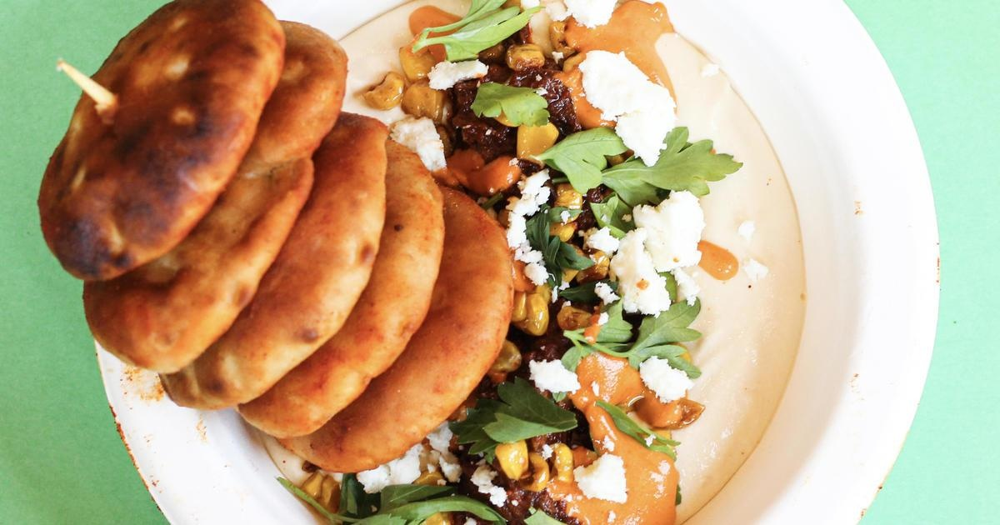

Where you can find new foods at the 2023 Minnesota State FairMINNEAPOLIS -- The 2023 Minnesota State Fair is only 43 days away, and with several , you'll want to get a game plan in order. But fear not, WCCO has you covered. Below you'll find a guide for all the new vendors and where you can find them at the state fair this year. Vendor names and locations 1. Al Taco Baba: Located on the east side of Underwood Street between Lee and Randall avenues, just south of Little Farm Hands 2. Ba-Sants in Two Varieties: At French Meadow Bakery & Cafe, located on the north side of Carnes Avenue between Nelson and Underwood streets 3. Bacon-Wrapped Waffle Dog: At Nordic Waffles, located at West End Market, south section 4. Holy Land's Basil Hummus With Spicy Walnut Topping: At Holy Land, located at the International Bazaar, southeast corner 5. Bee Sting Sundae: At Bridgeman's Ice Cream, located on the northeast corner of Judson Avenue and Liggett Street 6. Birthday Cake Mini Donuts: At Mini Donuts & Cheese Curds, located on the east side of Underwood Street between Murphy and Lee avenues 7. Cheese Curd Stuffed Pizza Pretzel: At Green Mill, located on the east side of Cooper Street between Randall and Wright avenues, at Family Fair at Baldwin Park 8. Cheesecake Curds: At LuLu's Public House, located at West End Market, south of Schilling Amphitheater 9. Chicken Momo With Tomato Chutney: At Midtown Global Market's MomoDosa*, located in the Taste of the Midtown Global Market booth at the International Bazaar, east wall (Available Aug. 24-29 only) 10. Cloud Coolers in Three Flavors: At Spinning Wylde, located north of Wright Avenue between Cooper and Cosgrove streets, at Family Fair at Baldwin Park (new location) 11. Crispy Lutefisk Steam Bun: At Shanghai Henri's, located at the International Bazaar, north wall 12. Crunchy Balboa: At The Herbivorous Butcher, located in the Food Building, west section, south wall 13. Dill Pickle Cheese Curd Taco: At Richie's Cheese Curd Tacos, located on the north side of Judson Avenue between Liggett and Clough streets, outside the Sheep & Poultry Barn 14. Donut Delights: At Coasters, located on the southeast corner of Carnes Avenue and Liggett Street 15. Fried Butternut Squash Ravioli: At Oodles of Noodles, located in the Food Building, east wall 16. Fried Green Tomato Sandwich in Two Varieties – BLT and Vegetarian: At Minnesota Farmers Union Coffee Shop, located on the north side of Dan Patch Avenue between Cooper and Cosgrove streets 17. Fruity Cereal Milk Biscuit: At LuLu's Public House, located at West End Market, south of Schilling Amphitheater 18. Galabao: At Union Hmong Kitchen, located at the International Bazaar, south wall, west corner 19. Holey Hamloaf Breakfast Sandwich: At Hamline Church Dining Hall, located on the north side of Dan Patch Avenue between Underwood and Cooper streets 20. Hot Honey Cheese Sticks: At The Blue Barn, located at West End Market, south of the History & Heritage Center 21. Irish Butter Ice Cream Over Brown Sugar Cinnamon Toast: At Blue Moon Dine-In Theater, located on the northeast corner of Carnes Avenue and Chambers Street 22. Italian Duo Dunkers: At Sara's Tipsy Pies, located in the Food Building, northwest wall 23. Jam'nades in Two Varieties – Blueberry Mint and Strawberry Jalapeño: At Jammy Sammies by BRIM, located at the North End, northwest section, across from the North End Event Center 24. "Kind of a Big Dill" Pickle Lemonade: At Nordic Waffles, located at West End Market, south section 25. Lemonade Sorbet: At Quench'd: Lemonade/Bottled Water, located on the south side of Dan Patch Avenue between Nelson and Underwood streets 26. Loaded Lobster Fries: At Cafe Caribe, located on the south side of Carnes Avenue between Chambers and Clough streets 27. Maui-Sota Sticky Ribs: At RC's BBQ, located on the north side of West Dan Patch Avenue between Liggett and Chambers streets 28. Miami Mango Pickles: At Soul Bowl, located in the Food Building, east wall 29. MinneCookieDough Pie: At Minneapple Pie, located on the south side of Judson Avenue between Nelson and Underwood streets 30. Paletas in Two Flavors – Dill Pickle Lemonade and Mini Donut: At Hamline Church Dining Hall, located on the north side of Dan Patch Avenue between Underwood and Cooper streets 31. Pickle Fries: At Mike's Hamburgers, located on the northeast corner of Carnes Avenue and Nelson Street 32. Smoked Beef Arepa: At Midtown Global Market's Arepa Bar, located in the Taste of the Midtown Global Market booth at the International Bazaar, east wall (Available Aug. 30-Sept. 4 only) 33. Sota-cuterie Board: At Sabino's Pizza Pies, located in the Warner Coliseum, north side 34. Walleye Fritter Pops: At Giggles' Campfire Grill, located on southeast corner of Lee Avenue and Cooper Street, at The North Woods RELATED: New food vendors 35. Afro Deli: Serving: - Sambusas in three varieties - beef, chicken or veggie, with "Basbaas," a spicy Somali dipping sauce made with fresh chili peppers, jalapeños, cilantro, onions and lemon juice - Sweet Plantains, pieces of ripe plantains fried until golden brown - Somali Tea, a fragrant, spiced infusion of tea leaves, cardamom, cinnamon, cloves, ginger and nutmeg, served hot or iced and fresh mango juice Location: - In the Food Building, east wall 36. Bandstand Concessions: Serving: - The Bandstand Burger - Brucy Lucy bratwurst - Chicken Press sandwich - Lil Smoky Hot Dog - Pretzel Nugs - Facepunch Pretzels - Deep-Fried Baked Potato - Nachos, popcorn, peanuts, assorted candy - Variety of beer, wine, soda, Red Bull drinks, lemonade and bottled water Location: - In the Grandstand concert venue (separate concert ticket required) 37. Churros & Aguas Fresca: Serving: - Bags of churros with caramel or fudge sauce - Churros filled with strawberry, Nutella® or Bavarian cream - Churro sundaes with vanilla bean or cinnamon ice cream - Aguas frescas in watermelon, mango, pineapple and strawberry lime flavors Location: - On the northeast corner of Lee Avenue and Underwood Street 38. MomoDosa: Serving: - Chicken Momo With Tomato Chutney (blend of ground chicken, cabbage, onion, ginger and other spices steamed in a dough wrapper and served with tomato chutney) - Masala Dosa (South Indian crepe of rice and lentil batter, ghee, and served with tomato chutney and coconut chutney) - Veggie Pakora (shredded cabbage and onions dipped in chickpea batter, fried and served with mint and cilantro chutney and tamarind chutney, vegan and gluten-free) - Mango Lassi (smoothie made with mangoes, yoghurt, powdered cardamom and cloves) Location: - In the Taste of the Midtown Global Market booth at the International Bazaar, east wall (Aug. 24-29 only) 39. Peachey's Baking Company: Serving: - Amish doughnuts made on-site using traditional Amish recipes, topped with vanilla glaze and served warm - Peanut Butter Cream Doughnut, an over-sized Amish doughnut topped with house-made vanilla custard, peanut butter crumbles and whipped cream - Southern Sweet Tea Location: - On the north side of Randall Avenue between Cooper and Cosgrove streets, in front of the Progress Center 40. Tasti Whip: Serving: - Dole Soft Serve in pineapple, mango, strawberry and lemon flavors - Dole Floats with pineapple, mango, strawberry and lemon-flavored Dole Whip in pineapple juice - Dole pineapple juice - Bottled water Location: - On the northwest corner of Dan Patch Avenue and Underwood Street 41. Wow Fudge: Serving: - 70 varieties of gourmet, handcrafted, old-fashioned copper kettle fudge, including new custom Minnesota State Fair flavors – Strawberry Rhubarb, Blueberry Cheesecake and St. Paul Pickle Location: - In the Creative Activities Annex, south wall for more features. |
 |